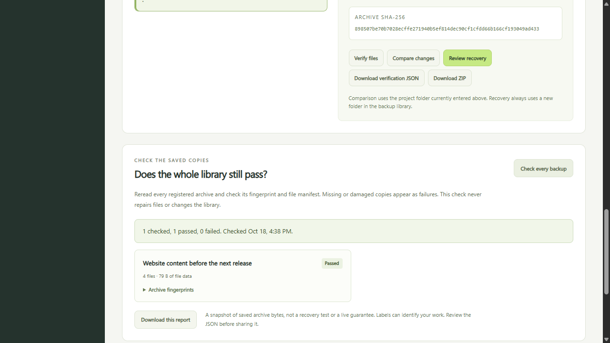
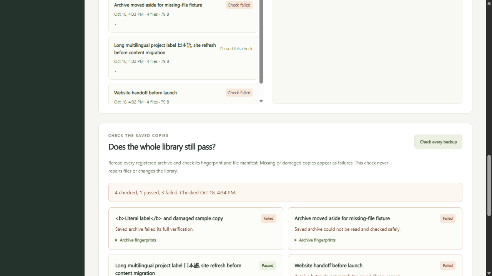
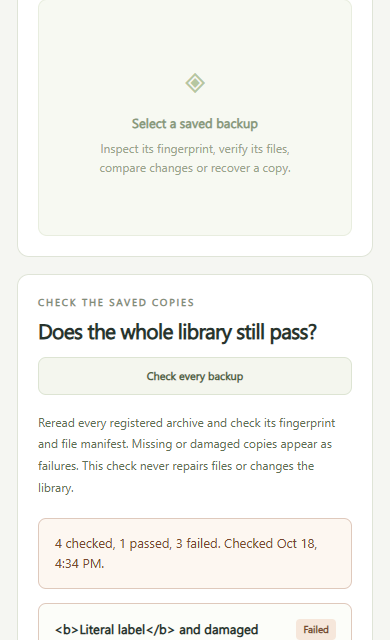

Read the saved bytes again.
Check every registered archive against its recorded fingerprint, ZIP structure and file manifest. Copies are checked sequentially, so a large library can take a while.
Reread your backup library before you need it. See which archives still match their saved records, which copies have failed, and what needs your attention.
Version 0.4.0-candidate.1. Requires Node.js 24. This page presents the app. File operations run on your computer after you extract the source and start the local server.

Check every registered archive against its recorded fingerprint, ZIP structure and file manifest. Copies are checked sequentially, so a large library can take a while.
Missing files, damaged ZIPs and record mismatches each produce a failed row. The other archives are still checked. Nothing is silently repaired or removed.
The JSON download contains the same passing and failing results shown on screen. Refreshing or changing the library clears the displayed report before another check.

node server.mjs http://127.0.0.1:4330/ node --test server.test.mjs vendor/cli.test.mjs
The source uses Node.js built-in modules. No runtime package installation, cloud account or registration is needed. Stop the app with Ctrl+C.

Each row includes its backup label, recorded archive fingerprint, the fingerprint read during this check when available, a status and an error for failed copies. Passing rows also include file counts and total file-data size. An empty library reports zero checked, not a passing backup.
Historical verification dates stay unchanged. The current view separates previously recorded checks from the fresh report. A failed copy is visibly marked Check failed.
Absolute workspace and backup-storage fields are omitted. Labels can still identify your work. Review the JSON before sharing it. Hashes establish consistency, not ownership, trusted origin or the absence of harmful content.
A report describes its check time. It does not prevent other programs from changing files later or prove that a recovery destination works.
The existing recovery workflow still checks a new destination and the saved file inventory before an explicit Restore checked copy action. Changed names clear the plan. Recovery rechecks the archive and refuses an existing destination.
The 0.3 recovery guide and source remain available. The earlier 0.2 import guide is also preserved.
All 30 backend and CLI tests passed. Seven independent workflows checked empty and populated libraries, mixed failure types, unchanged storage, report privacy, actual downloads and exact recovered bytes.
Nine browser cases passed, with populated layouts at 320, 390, 768, 1024 and 1280 pixels. HTML-shaped labels remained literal text. An actual downloaded mixed report retained one pass and three failures.
The frozen ZIP was freshly extracted, every source hash verified and the same 30 tests rerun. Its browser interface created a four-file backup and checked that saved copy. Repeated checks are not extra unique tests.
Tested scope is Windows, Node.js 24.19.0 and the current test browser. Linux and macOS have not been tested. This is independent product work using synthetic files, with no client delivery or customer acceptance claim.
Keep another verified copy on a separate device. Stop programs that may change files while backing up. This preview is not a production backup service, an atomic snapshot or an adversarial filesystem race guarantee.